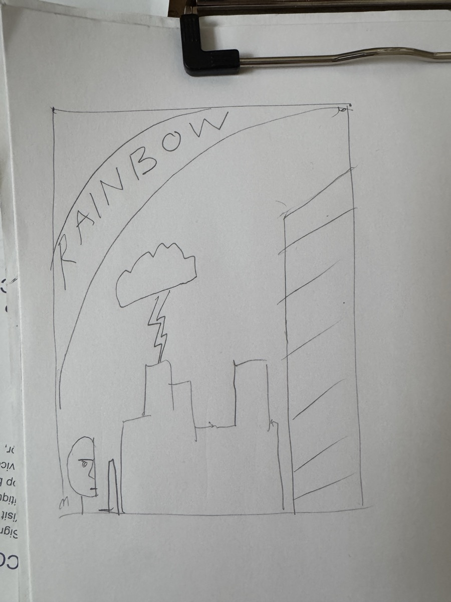

01
this is a sketch for the promotional poster to a movie I made up called RAINBOW. the building should be the Beresford in NYC, and the skyscraper should be a neo cyber punk tower. the person on the bottom left is half in shadow, holding a knife. the rainbow banner as solid rainbow lines behind it and a slab bubble hand made font. the cloud is a real cloud with a cartoon lightning bolt coming down. the sky is a gradient of pinks and gray storm colors